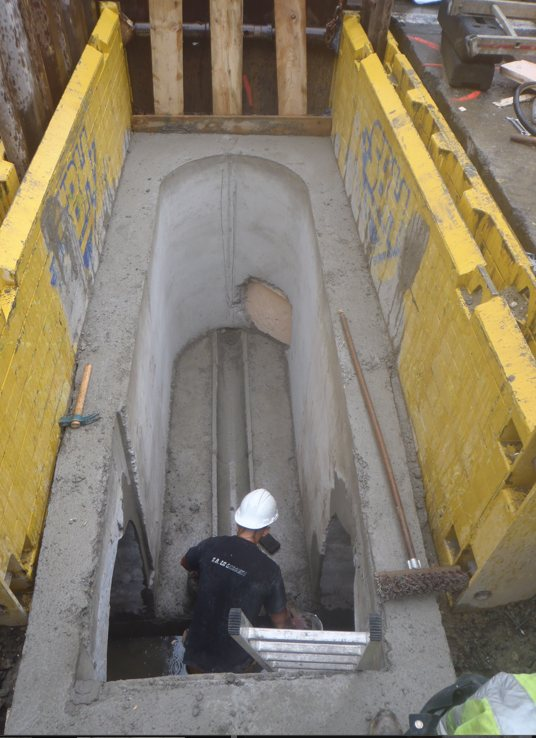
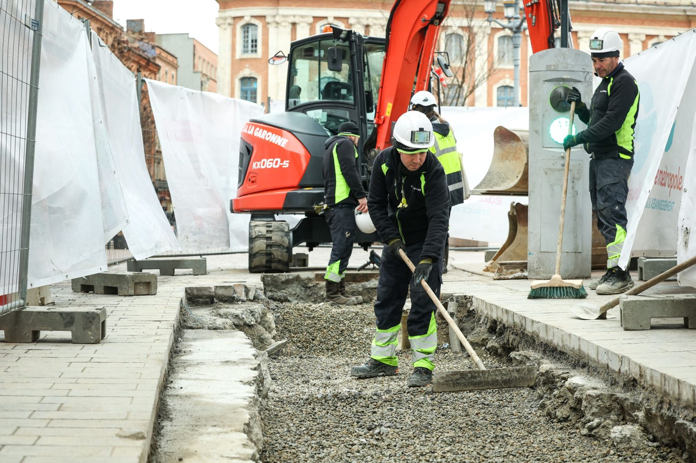

Expertise 01 / Sewerage
Sewerage
Building, renewing and rehabilitating wastewater and stormwater networks, their service connections and structures — in dense urban settings and on live networks.
Our approach
A network that runs continuously, and must never stop.
Sewer networks collect the wastewater and stormwater of an entire metropolitan area every day. They are buried, often old, and rarely visible — until the day they fail.
Since 1956, SA LA GARONNE has been building, renewing and rehabilitating these networks for local authorities and operators in Toulouse and its metropolitan area: sewer mains, individual service connections, manholes and ancillary structures. We work on live networks, at great depth and on large-diameter pipes, with one constant requirement: keeping the flow running throughout the works.
Our knowledge of the Toulouse subsoil and its networks, often since they were first built, is a decisive advantage in anticipating constraints and securing every phase.
Services
What we deliver.
From laying a new sewer main to rehabilitating an existing structure, we cover the full range of sewerage works.
Combined, foul and stormwater networks: earthworks, shoring, laying and connection, all diameters up to Ø 2000 mm.
Creation and renewal of sewer service connections in the city centre, including pedestrian and high-footfall areas.
Inspection manholes, chambers, overflow structures and special works: construction, level adjustment and rehabilitation.
Keeping the flow running during the works: pumping, temporary bypass and phasing tailored to operations.
Rehabilitation of sewer mains and manholes, by open trench or trenchless techniques depending on the survey.
Tightness testing, CCTV inspection, controlled backfilling and like-for-like road reinstatement.

Method
Four stages, no guesswork.
Every sewerage worksite follows a proven method, from survey to road reinstatement.
Inspection of existing works, utility locating, statutory notifications, phasing and traffic management plan.
Signage, trench shoring, management of pedestrian and vehicle flows, protection of residents and crews.
Earthworks, laying or rehabilitation, connections and service laterals — while keeping the network flowing.
Tightness testing, CCTV inspection, controlled backfilling, road reinstatement and as-built documentation.
Constraints under control
The ground, as we find it.
We work where conditions are most demanding: historic city centre, old networks, groundwater, traffic, residents.
Technical data
Other expertise
Complete know-how across water networks.
Contact
A network to build, maintain or rehabilitate?
Let's talk about your project. Our teams give you precise answers, drawing on 70 years of worksites.